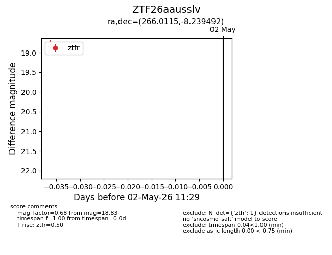
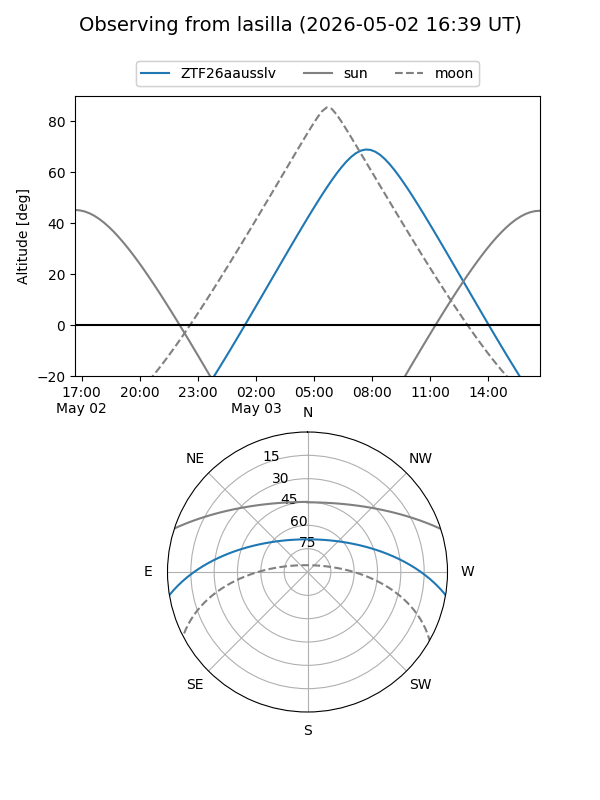
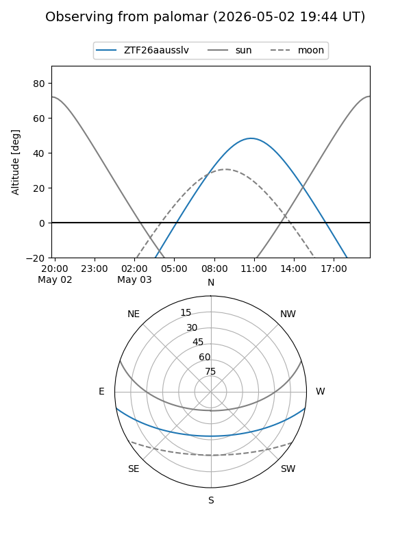

ZTF26aausslv
Target ZTF26aausslv at 2026-05-02 11:40
Aliases and brokers:
FINK: link
Lasair: link
ALeRCE: link
alt names
ZTF26aausslv (ztf,fink_ztf)
Coordinates:
equatorial (ra, dec) = 266.0115,-8.23949
equatorial (HMS+DMS) = 17:44:02.76,-08:14:22.17
galactic (l, b) = (17.6760,+10.94918)
Flags:
Photometry:
last ztfr=18.83
1 ztfr detections
Lightcurve

Visibility


Additional plots